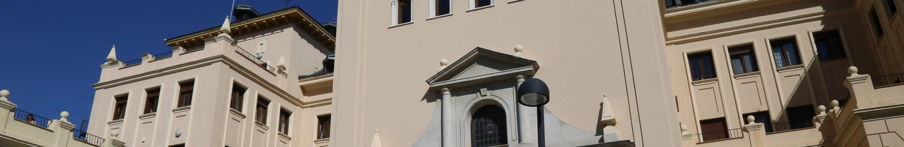

Un poco de historia
Para saber un poco más sobre nuestro colegio mayor, a continuación, el trailer de la película de Pedro Poveda, quien da nombre a nuestro colegio mayor.

Para saber un poco más sobre nuestro colegio mayor, a continuación, el trailer de la película de Pedro Poveda, quien da nombre a nuestro colegio mayor.